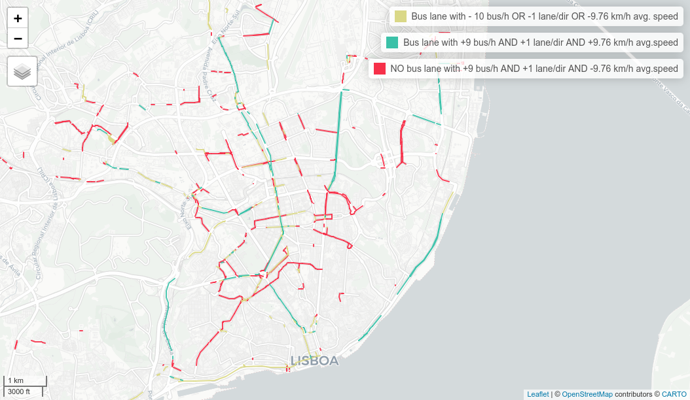

Introduction
GTFS-RT extends the GTFS static data model by providing real time
operational information. From service alerts, to trip updates, but also
vehicle positions. The collection of this data can provide valuable
insights about how planned operation performs in practice.
GTFShift provides several methods to enable this data
collection and analysis.
Collect GTFS-RT data
To collect GTFS-RT data, use GTFShift::rt_collect_json()
or GTFShift::rt_collect_protobuf(), depending on the
encoding the feed uses (JSON or Protocol Buffers, respectively). These
fetch GTFS-RT data from the endpoint and save it to a CSV file for
further analysis. The method runs in a loop, fetching data at regular
intervals (default is every 60 seconds) until manually stopped
(CTRL+C).
rt_collect_file <- "gtfs_rt_data.csv"
GTFShift::rt_collect_json("https://api.example.com/gtfs-rt", rt_collect_file)GTFS::rt_collect_protobuf() is an alternative method for
GTFS-RT feeds using Protocol Buffers encoding.
Extend prioritization with GTFS-RT data
Once GTFS-RT data is collected, it can be used to extend lane
prioritization analysis.
GTFShift::rt_extend_prioritization() takes a lane
prioritization data frame and a GTFS-RT collection (as an
sf object) and enriches the prioritization with real-time
metrics. Refer to the method documentation for the full details.
lane_prioritization <- GTFShift::prioritize_lanes(gtfs, osm_query)
rt_collection <- read.csv(rt_collect_file) |> sf::st_as_sf(coords = c("longitude", "latitude"), crs = 4326)
lane_prioritization_extended <- GTFShift::rt_extend_prioritization(
lane_prioritization = lane_prioritization,
rt_collection = rt_collection
)The resulting lane_prioritization_extended data frame
includes additional columns with speed metrics, such as average speed,
median speed, and speed percentiles, providing a more comprehensive view
of lane performance based on real-time data.
lane_prioritization_0800 = lane_prioritization_extended |> filter(hour==8)
mapview::mapview(
lane_prioritization_0800,
zcol = "speed_avg",
layer.name = "Average speed per lane"
)
p50_frequency = quantile(lane_prioritization_0800$frequency, 0.5, na.rm=TRUE)
p50_speed = quantile(lane_prioritization_0800$speed_avg, 0.5, na.rm=TRUE)
mapview::mapview(
lane_prioritization_0800 |> filter(is_bus_lane & (frequency<p50_frequency | (is.na(n_lanes) | n_lanes_direction<=1) | speed_avg<=p50_speed)),
layer.name=sprintf("Bus lane with - %d bus/h OR -1 lane/dir OR -%.2f km/h avg. speed", p50_frequency, p50_speed),
color="#DAD887"
) + mapview::mapview(
lane_prioritization_0800 |> filter(is_bus_lane & frequency>=p50_frequency & !is.na(n_lanes) & n_lanes_direction>1 & speed_avg>p50_speed),
layer.name=sprintf("Bus lane with +%d bus/h AND +1 lane/dir AND +%.2f km/h avg.speed", p50_frequency-1, p50_speed),
color="#3BC1A8"
) + mapview::mapview(
lane_prioritization_0800 |> filter(!is_bus_lane & frequency>=p50_frequency & !is.na(n_lanes) & n_lanes_direction>1 & speed_avg<=p50_speed),
layer.name=sprintf("NO bus lane with +%d bus/h AND +1 lane/dir AND -%.2f km/h avg.speed", p50_frequency-1, p50_speed),
color="#F63049"
)